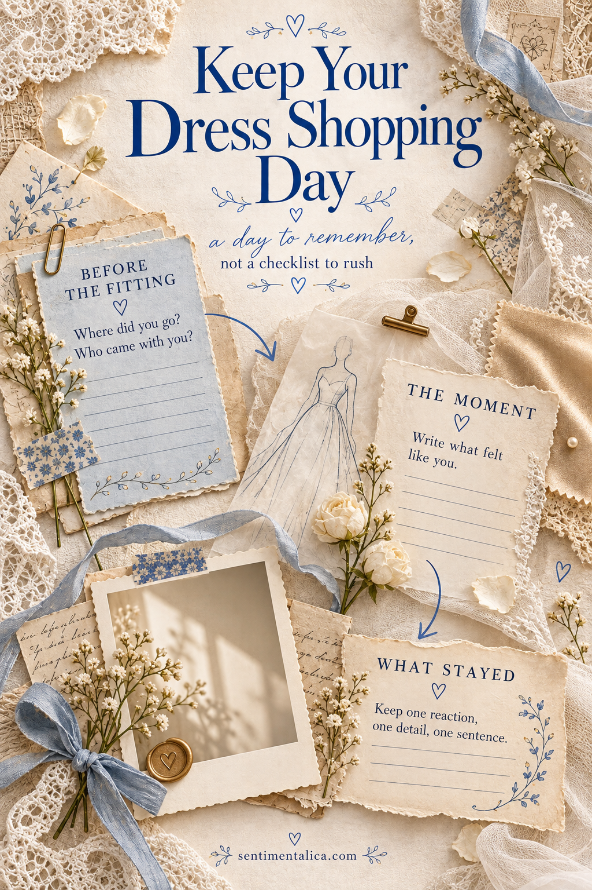
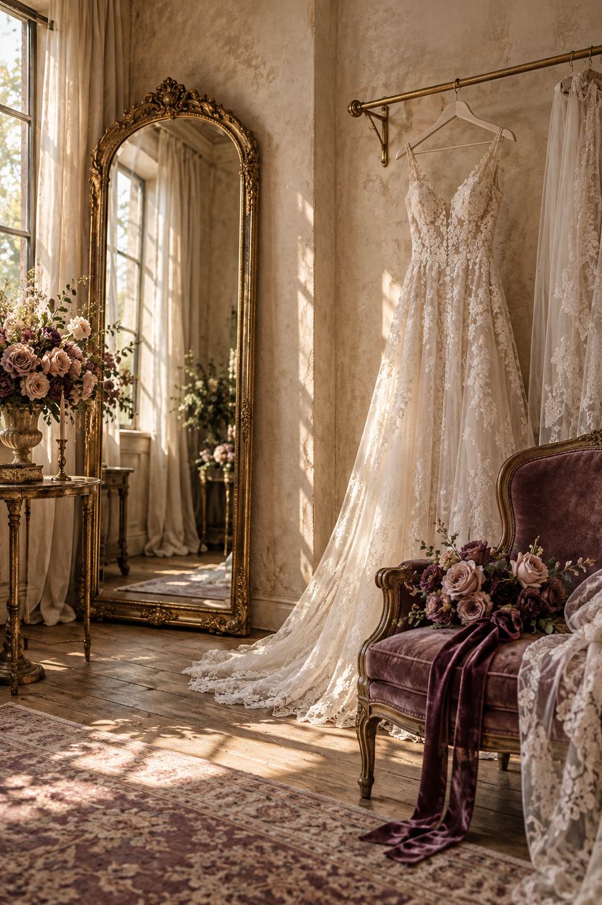

A wedding dress shopping day can blur into photographs of mirrors and hems. The feeling often lives somewhere else: in what you hoped before the fitting, the moment a shape felt right, or the quiet comment from the person beside you. Keep one appointment in one spread with three small zones. The page can hold a discovery, an uncertain afternoon, or a dress you did not choose.

Choose One Appointment to Remember
Begin with the date, the place, and the names of anyone who came along. Select one photograph you are comfortable keeping, or sketch the dress silhouette if you prefer the details to remain private. A simple outline with a neckline and skirt shape can be enough to bring the appointment back.
Set aside the pressure to record the whole search. This spread is about one day. If several appointments matter, give each a separate page using the same headings; you will be able to see how your thoughts changed without reducing them to a final decision.
The page can remember the appointment before you know what you will choose.
Leave a Place for Before the Fitting
Use a small corner for what you carried into the appointment. Finish the sentence ‘I thought I wanted…’ with a concrete detail: a soft sleeve, a particular silhouette, or something easy to move in. Then add one feeling, such as curiosity, nervousness, or relief at having company.
Write this part in your ordinary voice. You do not have to turn the afternoon into a grand milestone. ‘I had no idea what would suit me’ is a useful memory. It gives the photograph a beginning and lets the later notes show what you learned.

Give the Moment the Most Space
Place the photograph or silhouette near the center, leaving a quiet strip for your own words. Describe what you noticed while wearing the dress: how the skirt moved, which detail you kept looking at, or whether you recognized yourself in the mirror. Avoid copying the shop description when your own observation is available.
If you tried several dresses, choose a single image for this page and keep comparisons on a separate loose note. Too many photographs can turn a memory spread into a catalogue. You can remember an appointment warmly even when none of the dresses became the one you bought.
Write Down What Stayed with You
Use the final area for a companion’s reaction and one small detail from the day. An exact phrase can sit on a narrow paper strip. If you cannot recall the words precisely, write ‘Mum noticed the sleeves first’ rather than inventing a quotation. Your account is enough.
The small detail might be the weather outside the shop, the tea afterward, or the shoes you wore to the fitting. Choose something that belongs to that appointment. Keep appointment cards or receipts in a separate envelope if they contain information you would rather not show on the finished spread.
Let the Page Hold an Unfinished Decision
A useful closing line is ‘What I know now…’ Perhaps you discovered that comfort mattered more than sparkle, or that you wanted another appointment alone. If the decision is still open, leave it open on the page. You can add a dated note later without rewriting how the first day felt.
For the layout, use one paper tone behind the writing and let a single color from the photograph repeat in a small border or torn corner. Check that the text remains readable from an arm’s length away. The dress does not need a heavy frame, and the memory does not need a perfect ending. It needs enough space for your experience to remain visible.
Find more gentle paper projects in the Sentimentalica journal.